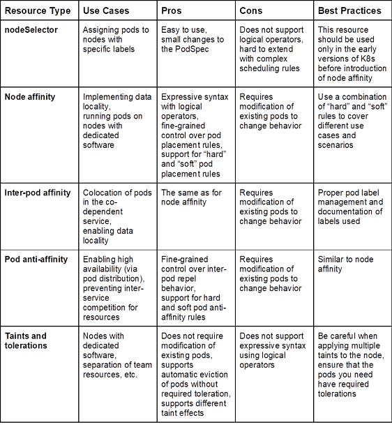

高级调度 Overview [2] #

Affinity vs. Taint [2] #
就污点而言,它的使用通常是负向的, 也就说, 污点常用在某Node不让大多数Pod调度只让少部分Pod调度时,又或者节点根本不参加工作负载时。比如:我们常见的master节点上不调度负载pod,保证master组件的稳定性；节点有特殊资源，大部分应用不需要而少部分应用需要,如GPU。
就Node Affinity来说,他的使用可以正向的,也就是说,我们想让某个应用的Pod部署在指定的一堆节点上。当然,也可以是负向的,比如说我们常说的Node 反亲和性,只需要把操作符设置为NotIn就能达成预期目标。
就污点而言，如果节点设置的污点效果是NoSchedule或者NoExecute,意味着没有设置污点容忍的Pod绝不可能调度到这些节点上。
就Node Affinity而言,如果节点设置了Label,但是Pod没有任何的Node Affinity设置,那么Pod是可以调度到这些节点上的。
| 特性 | 默认 | 优/劣势 | |
|---|---|---|---|
| taint | 负向的 | 设置NoSchedule， 默认不可调度 | 不要改现有pod[2] |
| 亲和，反亲和 | 正向的 | 设置了Label， 默认可调度 | 要改现有pod[2] |
亲和性 #
NodeAffinity配置[1]
- NodeAffinity配置分类:
- requiredDuringSchedulingIgnoredDuringExecution (强亲和性)
- preferredDuringSchedulingIgnoredDuringExecution (首选亲和性)
Topology [3] #
topologyKey
参考 #
- Kubernetes高级调度- Taint和Toleration、Node Affinity分析
- 详解 K8S Pod 高级调度
- kubernetes架构师课程 P97 P98 *** 【2023】云原生Kubernetes全栈架构师：基于世界500强的k8s实战课程
1xx. Kubernetes之Pod调度 未